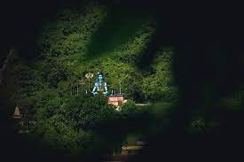

Shiv Tekdi
Mahadevachi Tekdi
A very Lovely spiritual place. During Shivratri period, the place is very neat and clean. Idols and temples are very well decorated. Trishul were truly eye catching. Tourist should visit shiv tekdi during shivratri period.A beautiful, ornate, pristinely temple that is unlike anything you have ever seen. Certainly in Nagbhir ! It is a learning experience for those unfamiliar with Hinduism and worth broadening your cultural horizons. It has a huge sculpture of Lord Shiva
Photos and videos of shiv tekdi
